?האם מוגדר במסך קבועי עמדות מכירה
תחת הקבוע: "ספריית תמונות" - יש להגדיר את נתיב התיקייה של התמונות בשרת IIS .יש לוודא כי התיקייה פתוחה לכל המשתמשים.
?מה שם התמונה
במסך כרטיס פריט: בשדה "תמונה" יש למלא את שם קובץ התמונה כולל הפורמט של התמונה - ניתן לבחור תמונות בפורמט jpg שגודלן עד 500 ק"ב, יש לשים לב כי נתיב
התמונה לא מכיל אותיות בעברית, דוגמה לשם תמונה: jpg.911001
יש לוודא כי תאריך קובץ התמונה תואם לתאריך הנוכחי
יש לסמן את הדגל "העברת תמונה"
?האם התמונות נמצאות בתיקיה הרלוונטית בשרת IIS
?האם התמונות נמצאות בקופות בתיקיה prioripos images
יש קובץ PDF במסמכים ב-Share Point, ניתן לשלוח ללקוח להסבר המלא
Pairzon – חברה ישראלית פרטית שמייצרת פלטפורמה להנפיק חשבונית ירוקה
כתובות IP לבדיקת טלנט:
Weezmo – פלטפורמה גלובלית להפעלת קמעונאות שמציעה פיתרון לקבלה מקומית של תשלום ללא מזומן, חבילת ניהול תוכנה וכלי מעורבות לצרכנים.
תקלה – חשבונית אינה נשלחת, אפשר לשלוח telnet לכתובות:
במידה ויש טלנט לכתובת המספרית אך לא לשמית - יש לבדוק DNS או להחליף קובץ HOSTS ולבדוק שנית (נתיב לקובץ: C:\Windows\System32\drivers\etc
אתחול לשרת זה נובע מתקלת סנכרון רשתית – בעקבות:
כיצד לאתחל אותו?
ניכנס ל-Default Websites
יש לעשות Stop ל-Default Website
ניכנס ב-Task Manager ל-Details
נסגור את תהליכי W3WP – ללא סגירתם, אתחול השירות לא יהיה אפקטיבי
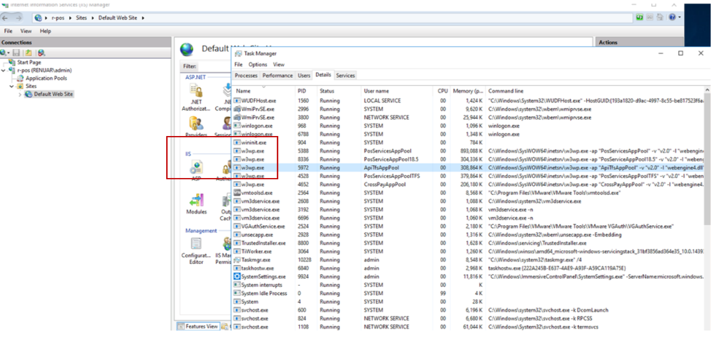נחזור ל-Default Websites
לעשות Start ל- Default Websiteמחדש
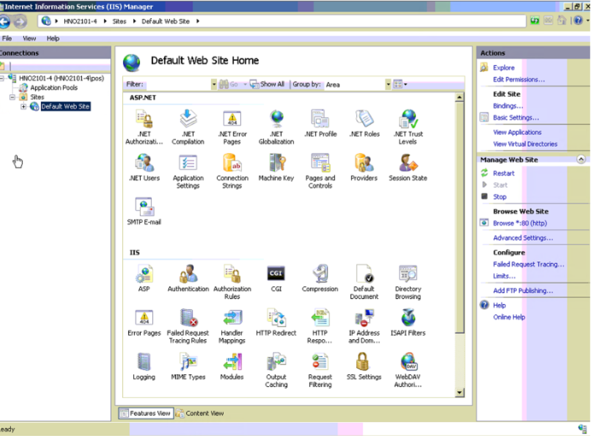כאשר אין אפשרות להתחבר לסניף
יש לבדוק אם בסניף יש תקשורת והקופה עובדת
במידה ויש תקשורת ועדיין אין אפשרות להתחבר
במידה ויש עוד קופות בסניף, יש לבדוק אם החיבור שלהן תקין
יש לוודא חיבורים של הראוטר / Switch
יש לשלוח פינג לכתובת הסניף
יש לבדוק אם לא שינו את כתובת ה-IP בפריוריטי > סטטוס עמדות מכירה > עמדה רלוונטית
יש לבדוק האם שירות VNC פועל > אם לא יש להנחות את הלקוח/ה רק להיכנס לאפליקציה בקופה עצמה
FIREWALL במידה ולא תקין יש לבדוק את הגדרות
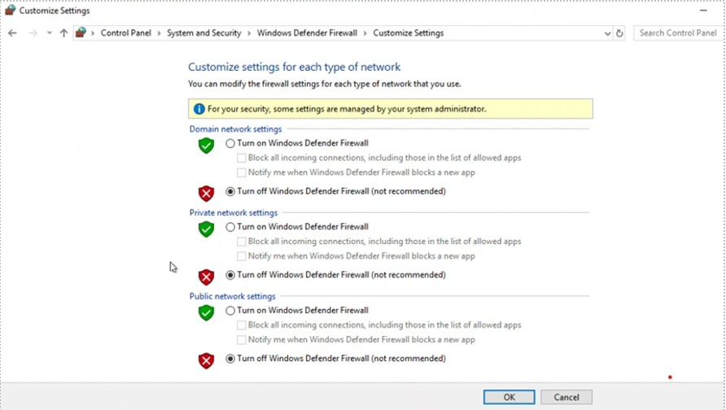אם לא מצליחים להתחבר, להנחות את הלקוח לחפש בשדה החיפוש בתחתית המסך NCPA.CPL כדי לבדוק כרטיס רשת.
יש להיכנס ל-Ethernet
מקש ימני
מאפיינים
בחירה ב-Internet Protocol Version 4 (סימון ב-V)
מאפיינים
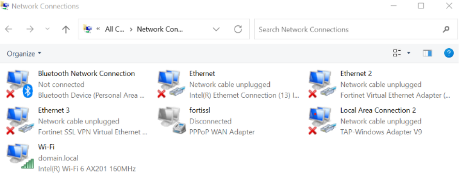 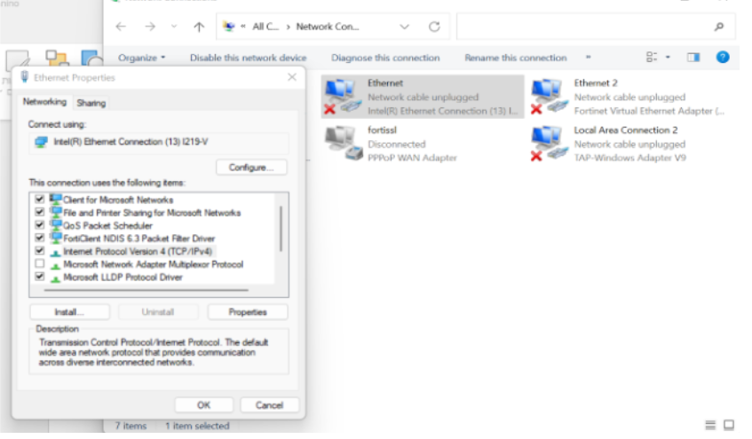יש לוודא שהלקוח על אפשרות שנייה – Use the following ip address:
להגדיר את כתובת ה-IP הרלוונטית או לוודא שכתובת IP מוזנת.
יש ללחוץ בסוף על OK על מנת לשמור את ההגדרה החדשה
לצאת ולוודא התחברות תקינה לכתובת IP החדשה
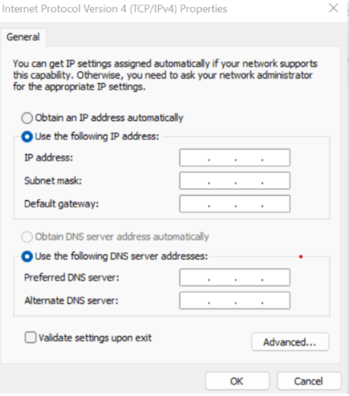נבדוק שגיאות בקובץ ERN Box. בתיקיית קבצי ההתקנה יש מספר קבצים שמפעילים את הרכיב, קובץ הטסטר בודק האם יש שגיאות ברכיב
יש להריץ קובץ ErnBoxTest ובכך לוודא תקינות
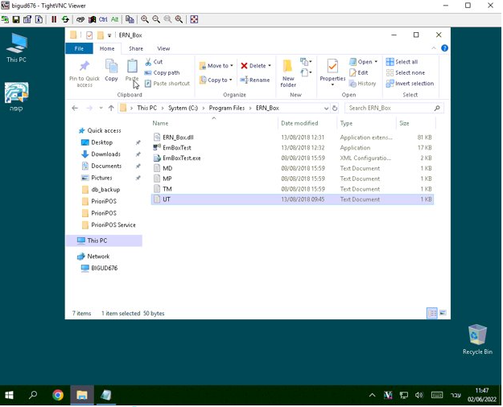שגיאה בהרצת הטסטר, שגיאה זו מזהה שקיימת בעיה בהגדרת תוכנת ERN וצריך הגדרה מחדש
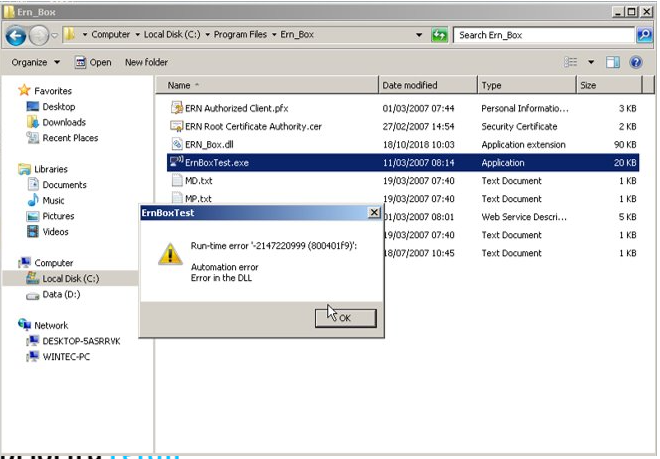קבצים אלו ממוקמים בתיקיית ההתקנה של הרכיב, הם מכילים קבצי נתונים שנדרש לבצע בהם שינוי על מנת שהרכיב יוכל לעבוד תקין.
במידה ו-ERN BOX נכשל, נבדוק קובץ MP
תחילה המסמך יכיל רק אפסים (0) יש לשנות את 6 הספרות הראשונות למס' המסוף של הלקוח ולשמור את השינוי שבוצע.
את מספר המסוף ניתן לקחת מהפריורטי משדה "אתרים של הלקוח"
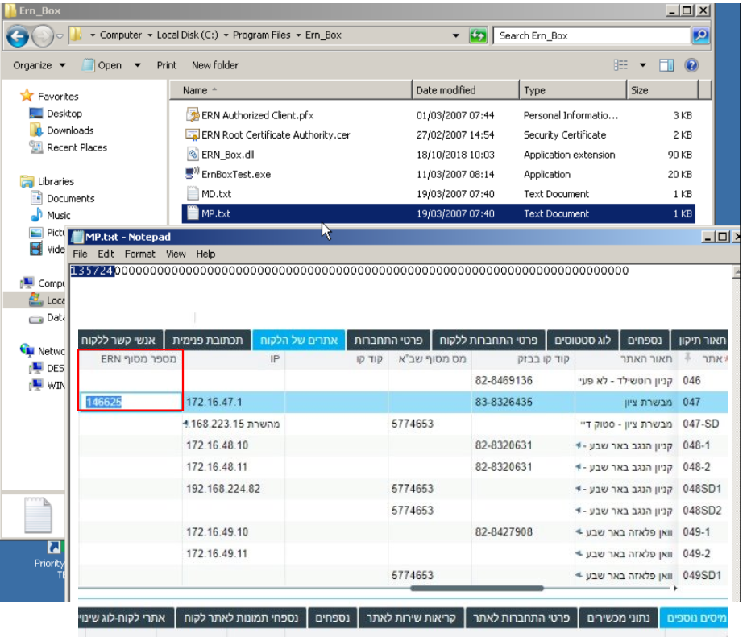יש לשנות את הספרה הראשונה מ-3 ל-1.
יש לשנות את הספרה 8 (היחידה) ל-4 ולבצע שמירה של השינויים.
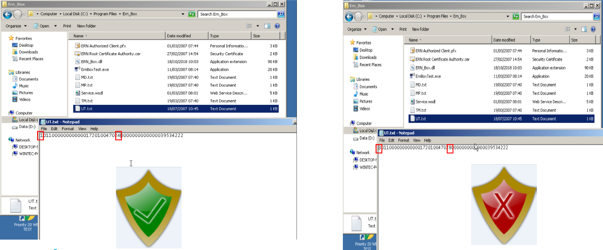קובץ כבד! ייקח זמן להגיע לתיקיות הבאות - ייתכן ונצטרך להעביר לדסקטופ ואז לקופה עצמה
ללא קובץ Hosts משרד אחורי לא יעלה, זוהי תקלה נפוצה במחשבים חדשים
לוקח מסניף אחר את הקובץ ע"י הנתיב:
C:\Windows\System32\drivers\etc
קובץ Hosts
מושך את הקובץ לקופה בה חסר הקובץ לאותו המיקום בכונן C ע"פ הנתיב
כניסה לתוכנת קופה
וידוא תקינות
יש לקחת קובץ Tabula.ini מסניף אחר באותה רשת ולהעביר לתיקיית C > windows
משרד אחורי ישמור את נתוני הכניסה
במקרה של הודעת Setuser בעת העלאת תוכנת קופה, יש להעביר ללקוח את כל תיקיית Priority מהטרמינל לקופת הלקוח לכונן C
נתיב לתיקייה: C:\setup
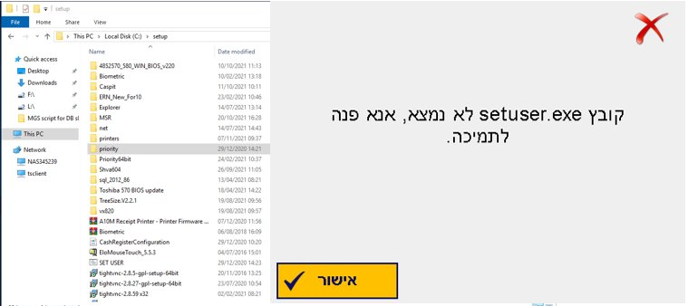הגדרה
סרטיפיקציה = תעודת אישור, בעל הדומיין (האתר) מנפיק אותה מול אחת החברות המוכרות בשוק (godaddy/digicert/Thawte ועוד) בעצם כל חברה המאושרת ע"י CA (ארגון שאחראי על הנושא)
מה זה אומר בפועל אתה שואל?
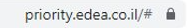בכל דפדפן כאשר נלחץ על המנעול נוכל להיכנס ולצפות בפרטי הסרטיפיקציה
הנפקת הסרטיפיקציה בעצם מקנה לאתר (ולשרת בעצם) ולידציה שהוא בטוח. יש שימוש בתקן SSL (המנעול החביב בצד הכתובת, ראה תמונה), תקן SSL מדבר כמובן על HTTPS (פורט 443) בכל דפדפן כאשר נלחץ על חברינו המנעול נוכל להכנס ולצפות בפרטי הסרטיפיקציה - מי המנפיק שלה? מה התוקף? מה תאריך ההנפקה? ועוד..
השגיאה:
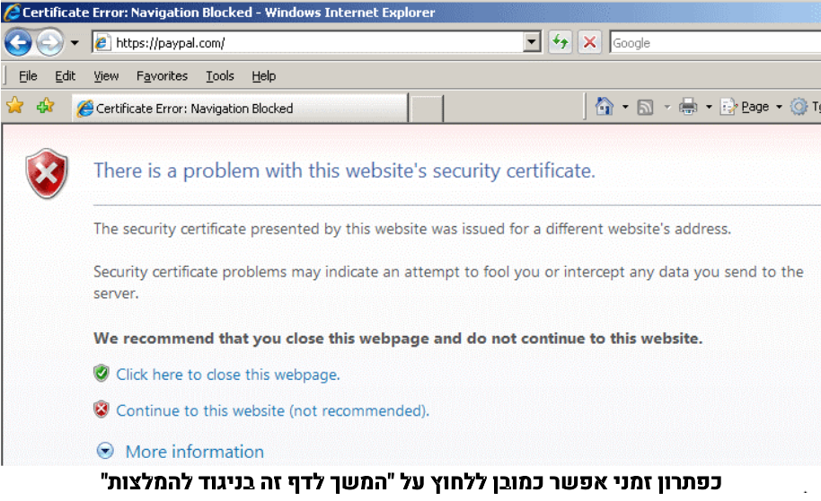למה זה קורה בכניסה ל-Market Gate?
התקלה צצה לאחר שדרוג מרקטגייט, מדובר במעבר אבטחתי מ-HTTP (פורט 80) הפחות מאובטח ל-HTTPS (פורט 443) היותר מאובטח.
מדוע תקלה זו קורית בקופה?
מכיוון שהקופות הן בעצם IPVPN הן אינן יוצאות לאינטרנט - לכן הן לא יכולות לפנות לCA (Certificate Authorization) ולבקש להוריד במידה ויש את הסרטיפיקציה המתאימה על מנת שהמחשב ידע שהאתר הזה אכן מה שהוא אומר שהוא.
תקלה: - SC22053636 הודעת שגיאה במשרד אחורי, בפועל המשתמש לא היה פעיל
פיתרון: המשתמש לא היה פעיל בפריורטי, יש להפנותו למשרדים ולסמן דגל לפי התמונה נתיב בפריורטי: מנהל המערכת > תחזוקת מערכת > משתמשי מערכת > משתמשי מערכת
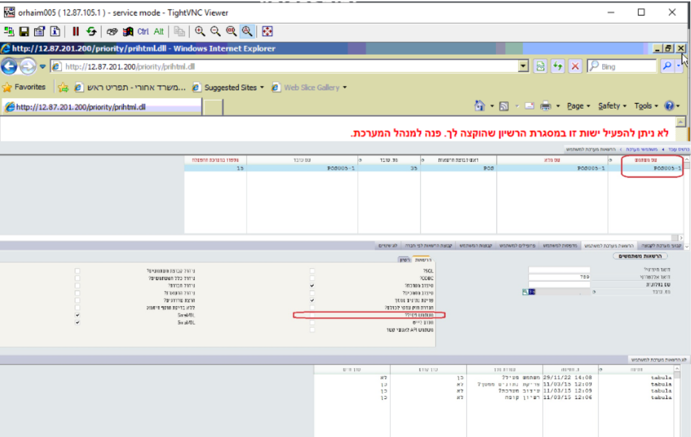תקלה: SC22053797 - תעודה לא נמצאת במשרד אחורי, לא בוצע חיפוש במסך הנכון בפריורטי
פיתרון: להלן המסך הנכון – משלוחים ללקוח, התעודה הייתה שייכת למסך זה.
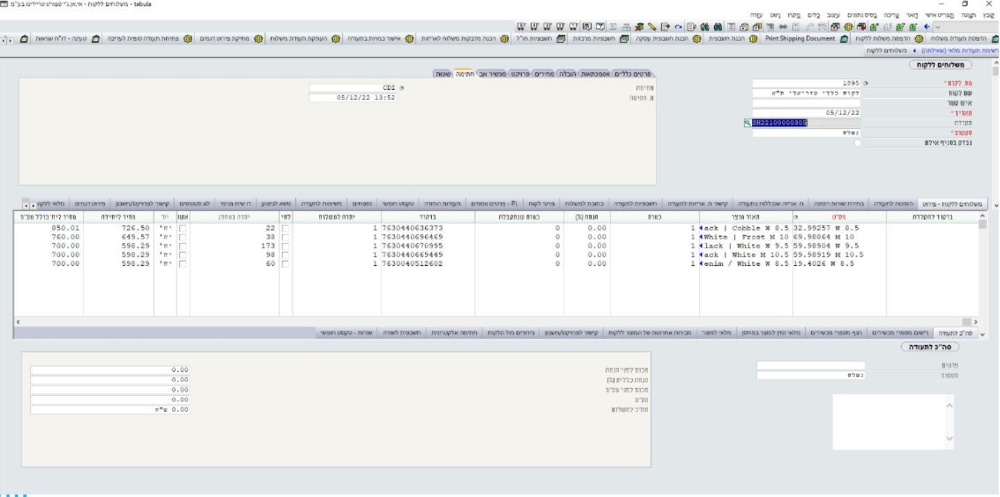במידה והמשרד האחורי בתצורת Priority Web וישנה הודעת שגיאה
יש להתקין את התוסף בדפדפן Chrome
נבדוק האם הדפדפן הותקן על-ידי לחיצה על הגדרות (3 נקודות למעלה מצד שמאל/ימין)
Extensions
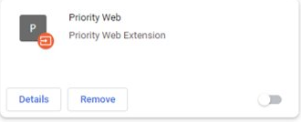במידה ותוסף זה אינו מופיע, נוריד אותו מהקישור בשגיאה
**באישור ר"צ
יש להיכנס למסך כרטיס פריט
לבדוק מה הפריט המרכז
להיכנס למסך מחירונים
לבדוק היכן מסומן מחירון pos
לרדת למסך בן
לחפש מחירי מוצרים בתוקף
לשנות את מחיר הפריט
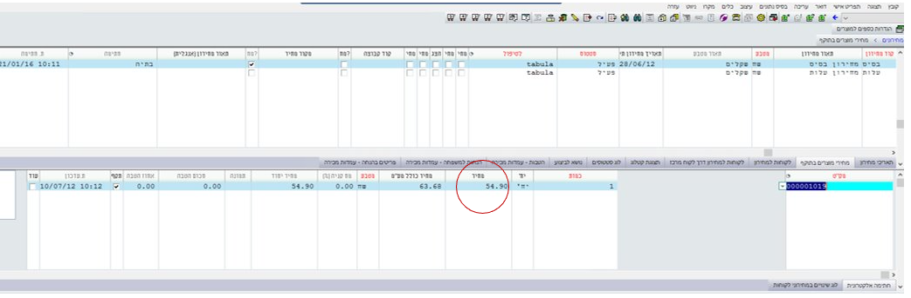מיקום בפריוריטי של כל צד ג' שרלוונטי
סניפים> עמדות מכירה לסניף> מספר מסוףDTS =
סניפים> עמדות מכירה לסניף> מזהה נקודות צד שלישי = מולטיפאס
תתי חברות>תתי חברות POS>מזהה רשת פרקסל
באילו שגיאות נפנה את הלקוח למולטיפאס?
"ספק לא מורשה"
קוד לא מתאים לכרטיס"
שגיאת "קוד/רשתות/חנות/קופה אינו מוגדר בפרקסל"
יש לבדוק בפריורטי במסך תתי חברות—תתי חברות POS או עמדות מכירה לסניף מזהה נקודות צד שלישי.
אם תקין, יש להפנות למרכז רשת על מנת לבדוק עם פרקסל
לבדיקת זיכויים - יש להיכנס למסך מימוש זיכויים/שוברים בפריוריטי
תקלה במבצע בקופה אחת לעיתים תהיה תקלת סנכרון, לצורך כך נבצע אתחול סרוויס ונוודא תקינות.
במידה ולא תקין, נבדוק בפריורטי סנכרון במסך 'סטטוס עמדות מכירה'.
במידה והתקלה הינה רוחבית:
לוודא דגל פעיל בפריוריטי במסך 'הגדרת מבצעים' > מסך בן סניפים למבצע שמסומן דגל > מסך בן פריט למבצע עם מסומן על משפחת מבצעים דגל פעיל >
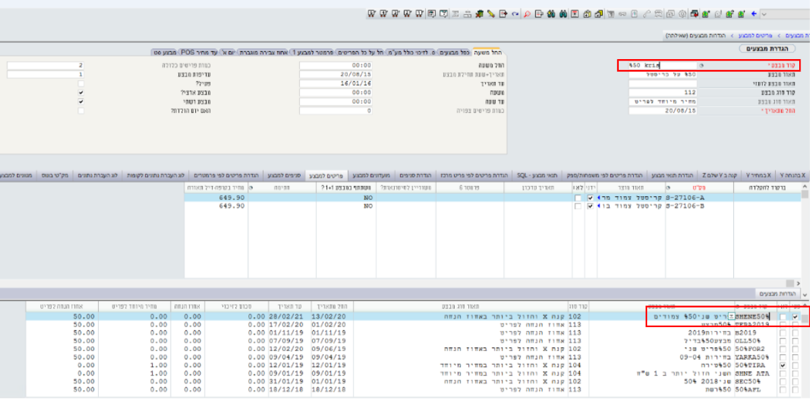בתוכנת הקופה במסך ניהול מערכת - נתוני מבצע - ניתן להקליד בחיווי קוד מבצע את הקוד המבצע הנדרש ולראות האם המבצע נשלף ומכאן הסתכנרן לקופה.
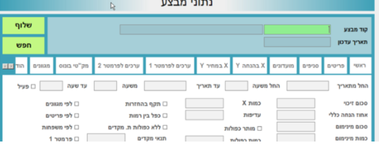תקלה: SC22049447– מק"ט לא מקושר למבצע, בדיקה במסך כרטיס פריט לא רלוונטי,
פיתרון: יש לוודא האם המוכרנית רשאית לבצע הנחה ידנית במסך הבא:
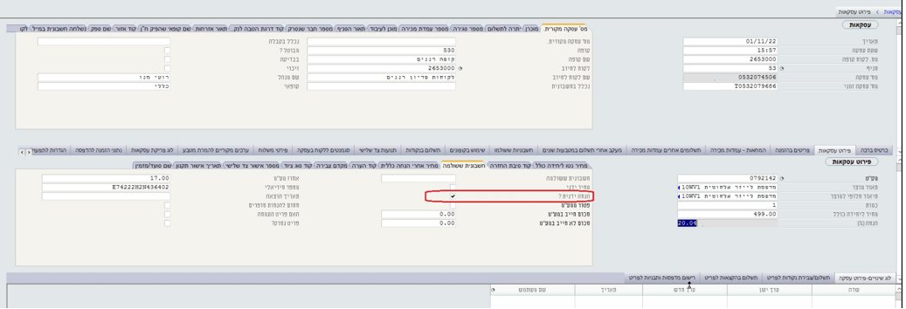תקלה:SC22051341 - שיוך עובד לסניף לצורך שימוש במשרד אחורי,
פיתרון: להסביר למנמ"ר היכן לבדוק בפריורטי
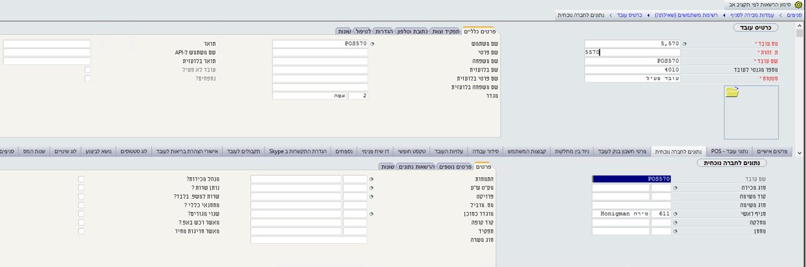ברירת המחדל של הקופה להדפיס העתק לעסקאות מסוג זיכוי / קופון / הצטרפות למועדון.
תחת מסך "נתוני חברה" בפריוריטי קיים דגל "ללא הדפסת עותק נוסף".
הקופות פועלות לפי מסך סוגי עסקאות.
במסך זה כאשר מסמנים את הדגל - יש עמודה בה ניתן להגדיר האם יודפס העתק לסוג העסקה.
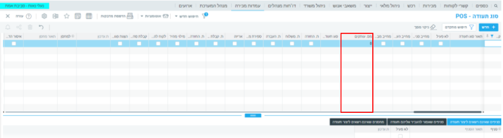נפתח TASK MANAGER ונראה אם PRIORIPOS GUI פתוח - אם כן נסגור
נראה אם SUPPORT.EXE או RS232MANAGER פתוחים - אם כן נסגור
נבדוק אם הסרוויס למטה - אם כן נבצע אתחול
אם מתקבלת שגיאה - נבדוק האם קובץ קונפיגרציה ריק
אם ריק נמחוק אותו ונחליף את הסיומת של קובץ הגיבוי
אם אין קובץ גיבוי בתיקייה ניקח מתיקיית הגיבוי
נבדוק אם קובץ CLINET ב-SQL נפוח מדי - אם כן נצמצם ע"י הרצת סקריפט DELETENONALLACTIVEITEMS >
נבדוק אם יש שגיאות ב-SQL STUDIO > אם כן נריץ סקריפט SUSPECT בהתאם
נבדוק קובץ private במיקום: C:\Program Files\edea\PrioriPOS Service
נבדוק שיש מספיק נפח בדיסק
ניתן לבצע פריסה מחדש לגרסה
אם הכל לא עובד - נעביר לסיסטם לבדיקה
אם נעלמו הלחצנים בסרגל למעלה בקופה, יש ללחוץ על:
Crtl+Alt+Shift+F
CTRL ALT SHIFT F
יש להיכנס לכונן C
Priopos
קובץ Posntities backup(777).xml ולשנות את שמו לפני סיומת ה- XML
יש להעלות קופה ולוודא תקינות
אם לא עבד, ניתן למחוק את הקובץ כולו (יווצר אחד חדש בהמשך) ולהיכנס לקופה
בהגדרה רק קופה אחת יכולה להיות אחראית על דיווח נוכחות (לפי הגדרות הרשת / הלקוח)
להיכנס לקובץ קונפיגורציה של הקופה – CashRegister
לחפש בקובץ (crtl f) allowtoreporttime ולשנות true—false
כאשר קופה X לא מקבלת גיפט דוגמת פרקסל/מולטיפס/DTS/Cross Pay
כרטיסים כן עוברים בקופות אחרות בסניף
יש להעביר את קבצי הגיפט מקופה אשר מקבלת גיפטים לקופה בה הגיפט לא עובר (בתנאי שהקופות שייכות לאותה רשת)
יש להיכנס בקופה להעברת קבצים
כונן C
PrioPos
תיקייה רלוונטית לפי הגיפט, לדוגמה: CrossPay
להעביר את הקובץ
לוודא העברת גיפט תקינה
אחד ממנפיקי הגיפט חסר, מה צריך לעשות?
יש לבדוק בפריורטי במסך אמצעי תשלום שספק הוגדר (ניתן לראות תמונה מהפריורטי בתצוגה מלאה F5)
במידה והקופה ביקשה קוד טכנאי, יש להזין (לא למסור ללקוח) ולפתור תקלה.
במידה והקופה נתקעה, בוצעה בדיקת במסך עסקאות, אין "וי" ואנו מבינים כי עסקאות לא עברו לשרת
בדיקה של מקום בדיסק (כונן C)
אתחול סרוויס קופה
כניסה לתוכנת קופה
לבדוק האם העסקה נשמרה ועלתה לשרת (האם יש V במסך עסקאות)
יש להדריך את הלקוח ללחוץ על: Crtl + Alt+ חץ למעלה
בקופת הלקוח, כדי להגיע לתיקיית הקבצים של קופה אחרת, יש להיכנס ל—רשת במחשב
ולכתוב: \\192.168.100.115\c$
כדי להוציא קובץ zip, יש ללחוץ פעמיים על שם הסניף והעמדה – להסתכל בתמונה:
הגדרות:
Log txt – לוג קופה מכיל את כל הפעולות אשר בוצעו באפליקציית קופה, שגיאת משתמש מה שהלקוח ראה ומה קשור לבעיה
דיספטצ'ר – סנכרון יוצא מהקופה (מה חסר בעסקה, שגיאות)
Service log – סנכרון נכנס
כדי להעביר לוגים לבק אופיס, יש לשמור את הנתיב ב:
כונן L, תיקיית לקוח, לפתוח תיקיה חדשה עם מספר קריאה
להעביר לוגים ע"י לחיצה על החץ בכיוון הרלוונטי
כיצד להוציא לוגים?
כניסה לשרת API
כניסה לתיקית C:\inetpub\wwwroot
כניסה לנקודת קצה רלוונטית (בדר"כ edearetailapi)
2 אופציות ללוגים:
לוג פתוח - קיים בתיקייה הראשית לוג של היום וקיימת תיקיית לוגים
לוג סגור –
יש להיכנס לWWWROOT וללחוץ קליק ימני על התיקיה הרלוונטית
להיכנס properties
טאב של SECURITY
יש ללחוץ על עריכה בהרשאות ולבחור בiisusers
בחלק התחתון של המסך לסמן דגל על WRITE ולשמור את השינויים.
הלוג יתחיל להיכתב במידה וצריך יש לשחזר או להשאיר פתוח ל-10 דקות ולסגור
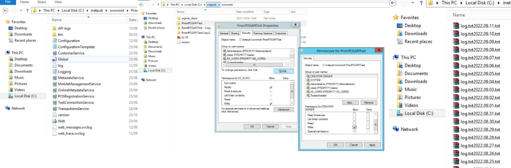נכנסים לתיקיית Prioripos
מחפשים את קובץ Loggin.xml ופותחים אותו עם Notepad
לחפש SALES
יש 3 שורות עם המילה SALE שמוגדרות כ- ERROR
בשורות אלו, יש לשנות את המילה ERROR ל-ALL
לשמור את הקובץ ולצאת מהתיקייה
יש להיכנס לתוכנת קופה, לשחזר את התקלה (על מנת שיווצר הלוג)
נסגור את תוכנת הקופה
ניכנס לקובץ loggin.xml ולשנות בחזרה את השורות עם המילה ALL בחזרה ל-ERROR
יוצר לוגים (ע"י לחיצה דאבל קליק על סניף וקופה)
הקובץ של לוג המבצעים נשמר בתיקיית לוגים (כונן L)
יש לשמור את הנתיב ולהעביר לטיפול המשך
יש לסגור את הלוג לאחר וידוא שהוא נשמר
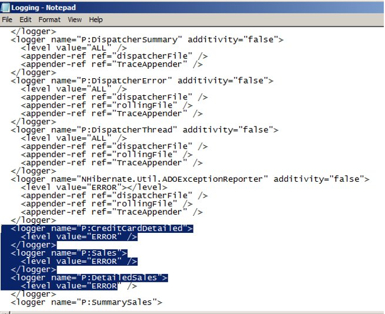כאשר הקופה רצה ברקע, בקופה מצד ימין למטה יש אייקון אדום
יש להקיש על אייקון זה מקש ימני
הכן חבילת Dump
בגמר ההכנה, הקובץ יועבר לתיקיית debugging
נתיב לקובץ: C:\debugging
בתוך תיקיה זו נוצרת תיקיה בשם hang_mode
בתוך תיקיה זו יש קובץ ZIP עם אותו השם hang_mode
זהו הקובץ אשר צריך למשוך
**במידה ואין אפשרות ליצור קובץ DUMP יש להעביר לסיסטם
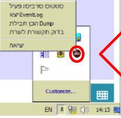קובץ זה משפיע על סנכרון הקופה ופעולותיה אל מול השרת
יש תיקיה ייעודית במיקום: C:\Program Files\edea\PrioriPOS Service
פיתרון לתקלות:
במידה וקובץ private ריק יש לנסות את הגיבוי שמתחתיו, ולמחוק את סיומת BAK
במידה וקובץ הגיבוי ריק, יש לחלץ מ-ZIP של הסרוויס בתיקיית PRIORIPOS BACKUPS
במידה ואין ניתן לקחת מקופה אחרת.
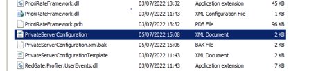במידה וקובץ קונפיגורציה ריק, יש לקחת קובץ קונפיגורציה גיבוי BAK
במידה הוא ריק, יש לקחת מ-DB Backup, נתיב: C:\db_backup
לפתוח קובץ Win.RAR
PrioriPOS
CashRegister – להעתיק קובץ זה לאותו מיקום בקופה הרלוונטית
מספר גרסה - WCFV
>WCFVirtualDirectory>POSServices2.4.1.0>/WCFVirtualDirectory>
יש לוודא מספר גרסה מקורי במיקום:
קובץ version בכונן c
נתיב:C:\PrioriPOS
Branchcode = סניף
יש לוודא מספר סניף תקין ב:
פריורטי>מסך סטטוס עמדות מכירה
תוכנת קופה (למעלה מימין)
Allow to report time
לשנות מ-True ל-False
יש לוודא תקינות ב- תוכנת קופה (לחצנים למעלה)
מספר קופה - PointOfsale
מסופון - לחפש external
(רק אם זה וריפון)
לוודא COM בתוכנה הרלוונטית ולשנות בהתאם בקובץ לדוגמה: חיפשנו COM בתוכנה ומצאנו COM2, בהתאם לכך נשנה בקובץ קונפיגורציה
Company Name – יש לחפש שם זה על מנת לוודא שהלקוח מוגדר נכון בקובץ
ניתן לוודא מול קופה אחרת (באותו סניף / סניף שונה)
יש לבדוק ב-Priority Client
מסך סניפים
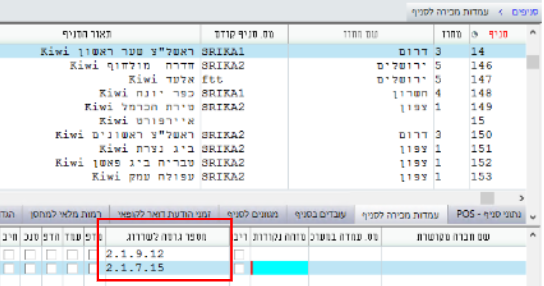ראשית יש להוריד Service למטה
להעתיק את תיקיית PrioPos (לצורך גיבוי)
למחוק את כל תוכן התיקיה מלבד קובץ קונפיגורציה
למחוק את תוכן תיקיית PrioPOS Service
בתיקיית PrioPOS Downloads יש לפרוס (Extract to):
תיקיית Client.GUI, תיקיית PrioPOS Service
לאחר הפריסה תיקיית Downloads אמורה להיות ריקה
להדביק קבצי סרוויס במיקום:
C:\Program Files\edea\Prioripos Service
להדביק קבצי GUI במיקום:
C:\Prioripos
לשדרג גרסת קופה בקובץ קונפיגורציה - WCFV
להעלות סרוויסים למעלה, להעלות תוכנת קופה – וידוא תקינות
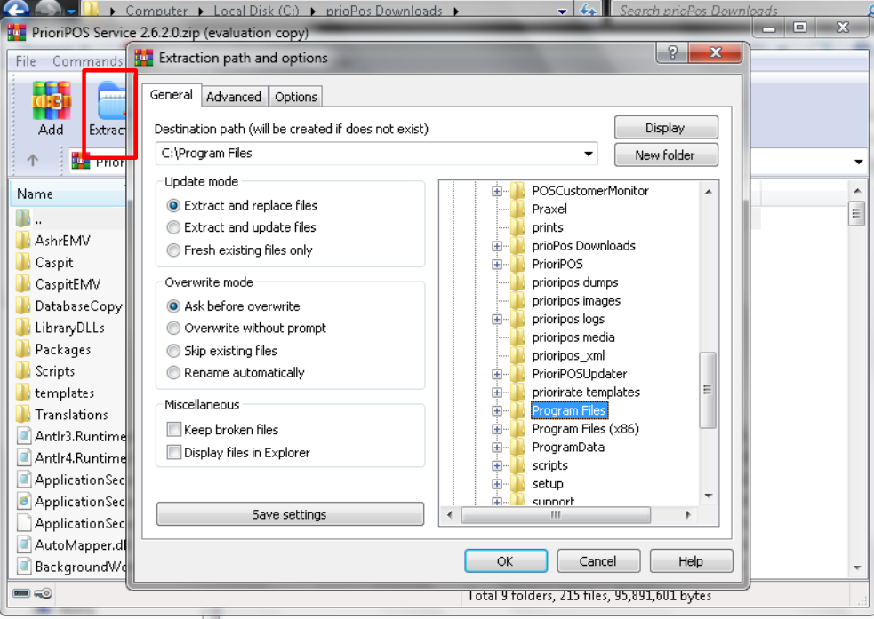ראשית יש להעתיק את קבצי הגרסה הרלוונטית סרוויס + GUI מתיקיית:
f:\development\products\prioripos\versions\2.X.X.X
ראשית יש להוריד Service למטה
להעתיק את תיקיית PrioPos (לצורך גיבוי)
למחוק את כל התיקיה מלבד קובץ קונפיגורציה
למחוק את תוכן תיקיית PrioPOS Service
בתיקיית PrioPOS Downloads יש לפרוס (Extract to):
תיקיית Client.GUI, תיקיית PrioPOS Service
לאחר הפריסה תיקיית Downloads אמורה להיות ריקה
להדביק קבצי סרוויס במיקום:
C:\Program Files\edea\Prioripos Service
להדביק קבצי GUI במיקום:
C:\Prioripos
לשדרג גרסת קופה בקובץ קונפיגורציה - WCFV
להעלות סרוויסים למעלה, להעלות תוכנת קופה – וידוא תקינות
תקלה: SC22051569 – ניסיון לבצע החזר חלקי בקופה,
פיתרון: לא היה צריך לסמן דגל "החזר הכול", היה צריך לכתוב כמות מוחזרת (מסומן בריבוע אדום)
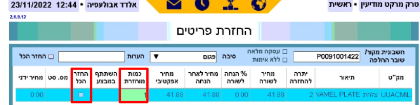תקלה: SC22051891 – שורות בקופה לא יורדות באופן אוטומטי, קלט קטן/גדול מדי
פיתרון: מדובר על הגדרות בפריוריטי, מסומן דגל "מעבר לשדה מוכרן" נתיב בפריורטי: סניפים -> עמדות מכירה לסניף, עמדה 2
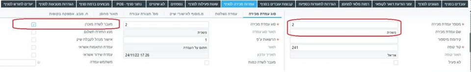במידה והמוכרן כבר הטעין את הגיפט, אך הלקוח התחרט ואינו מעוניין לשלם, יש לבדוק את סוג הגיפטקארד ולאחר מכן:
כרטיס אשראי – לשלם עבור טעינה עם אותו כרטיס
מולטיפאס / פרקסל / כרטיס פרי-פייד – למחוק אמצעי תשלום